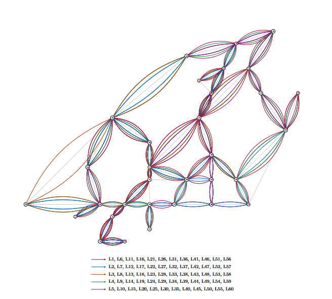

Campus Shuttle in Dresden
Network Design & Line Network Planning
A transport-optimisation project examining infrastructure network design and line-network planning for a proposed campus shuttle system in Dresden.
